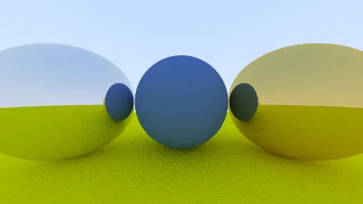

Raytracing in one weekend in C++
GitHub Repository
Welcome to my adventure following the raytracing in one weekend series in C++.
Part 7
Metal Reflection
Bounces galore
First we need to classify our materials
Material.h
#pragma once
#include "Color.h"
#include "Ray.h"
class HitInfo;
class Material
{
public:
~Material() = default;
virtual bool Scatter(const Ray& rayIn, const HitInfo& hitInfo, Color& attenuation, Ray& scattered) const = 0;
};
Then we add the material header to HitInfo
Hittable.h
#pragma once
#include "Interval.h"
#include "Material.h"
#include "Ray.h"
class HitInfo
{
public:
Position coordinates;
Vector3 normal;
shared_ptr<Material> material;
double time;
bool frontFace;
void SetFaceNormal(const Ray& rRay, const Vector3& outwardNormal)
{
// NOTE : The outwardNormal vector should be unit length
frontFace = Dot(rRay.GetDirection(), outwardNormal) < 0;
normal = frontFace ? outwardNormal : -outwardNormal;
}
};
As well as spheres
Sphere.h
#pragma once
#include "Hittable.h"
class Sphere: public Hittable
{
private:
Position mCenter;
double mRadius;
shared_ptr<Material> material;
public:
Sphere(Position center, double radius, shared_ptr<Material> mat):mCenter(center), mRadius(radius), material(mat){}
bool Hit(const Ray& rRay, Interval rayTime, HitInfo& hitInfo) const override;
};
Sphere.cpp
bool Sphere::Hit(const Ray& rRay, Interval rayTime, HitInfo& hitInfo) const
{
...
...
hitInfo.time = root;
hitInfo.coordinates = rRay.At(hitInfo.time);
Vector3 outwardNormal = (hitInfo.coordinates - mCenter) / mRadius;
hitInfo.SetFaceNormal(rRay, outwardNormal);
hitInfo.material = material;
return true;
}
we also need to add a new utility function
Sphere.cpp
class Vector3
{
...
...
...
static Vector3 Random(double min, double max)
{
return Vector3(RandomDouble(min, max), RandomDouble(min, max), RandomDouble(min, max));
}
bool NearZero() const
{
double s = 1e-18;
return fabs(x<s) && fabs(y<s) && fabs(z<s);
}
};
Now we can start to make our materials
We'll start off with a Lambertian material
LambertianMaterial.h
#pragma once
#include "Material.h"
class LambertianMaterial: public Material
{
private:
Color albedo;
public:
LambertianMaterial(const Color& baseColor): albedo(baseColor){}
bool Scatter(const Ray& rayIn, const HitInfo& hitInfo, Color& attenuation, Ray& scattered) const override;
};
LambertianMaterial.cpp
#include "LambertianMaterial.h"
#include "Hittable.h"
bool LambertianMaterial::Scatter(const Ray& rayIn, const HitInfo& hitInfo, Color& attenuation, Ray& scattered) const
{
Vector3 scatterDirection = hitInfo.normal + RandomUnitVector();
// Catch invalid directions
if(scatterDirection.NearZero()) scatterDirection = hitInfo.normal;
scattered = Ray(hitInfo.coordinates, scatterDirection);
attenuation = albedo;
return true;
}
Note :
For polished metals, the ray is not reflected randomly, it is mirrored.
Vector3.h
inline Vector3 RandomOnHemisphere(const Vector3& normal)
{
Vector3 onUnitSphere = RandomUnitVector();
// If in the same hemisphere as the normal
if(Dot(onUnitSphere, normal) > 0.0)
{
return onUnitSphere;
}
return -onUnitSphere;
}
inline Vector3 Reflect(const Vector3& direction, const Vector3& normal)
{
return direction - 2 * Dot(direction, normal) * normal;
}
We can now make a metal material, like so :
MetalMaterial.h
#pragma once
#include "Material.h"
class MetalMaterial:public Material
{
private:
Color albedo;
public:
MetalMaterial(const Color& baseColor): albedo(baseColor){}
bool Scatter(const Ray& rRayIn, const HitInfo& hitInfo, Color& attenuation, Ray& scattered) const override;
};
MetalMaterial.cpp
#include "MetalMaterial.h"
#include "Hittable.h"
bool MetalMaterial::Scatter(const Ray& rRayIn, const HitInfo& hitInfo, Color& attenuation, Ray& scattered) const
{
Vector3 reflected = Reflect(Unit(rRayIn.GetDirection()), hitInfo.normal);
scattered = Ray(hitInfo.coordinates, reflected);
attenuation = albedo;
return true;
}
then add some scatter to the camera
Camera.cpp
Color Camera::RayColor(const Ray& rRay, int bouncesLeft, const Hittable& rWorld) const
{
HitInfo hitInfo;
if(bouncesLeft <= 0) return Color(0, 0, 0);
if (rWorld.Hit(rRay, Interval(0.001, infinity), hitInfo)) {
Ray scattered;
Color attenuation;
if(hitInfo.material -> Scatter(rRay, hitInfo, attenuation, scattered))
{
return attenuation * RayColor(scattered, bouncesLeft - 1, rWorld);
}
return Color(0,0,0);
}
Vector3 unitDirection = Unit(rRay.GetDirection());
double blue = 0.5 * (unitDirection.y + 1.0);
return (1.0 - blue) * Color(1.0, 1.0, 1.0) + blue * Color (0.5, 0.7, 1.0);
}
Now to display our new scene
Raytracing.cpp
int main(int argc, char* argv[])
{
// World
HittableCollection world;
shared_ptr<Material> groundMat = make_shared<LambertianMaterial>(Color(0.8, 0.8, 0.0));
shared_ptr<Material> centerMat = make_shared<LambertianMaterial>(Color(0.15, 0.15, 0.75));
shared_ptr<Material> leftMat = make_shared<MetalMaterial>(Color(0.8, 0.8, 0.8));
shared_ptr<Material> rightMat = make_shared<MetalMaterial>(Color(0.8, 0.6, 0.2));
world.Add(make_shared<Sphere>(Position(0,-100.5,-1), 100, groundMat));
world.Add(make_shared<Sphere>(Position(0,0,-1), 0.5, centerMat));
world.Add(make_shared<Sphere>(Position(-1.0,0,-1), 0.5, leftMat));
world.Add(make_shared<Sphere>(Position(1.0,0,-1), 0.5, rightMat));
Camera camera(400, 16.0/9.0, 100, 50);
camera.Render(world);
return 0;
}
It should look a little something like this :
img. Source
Now away from bounces & onto fuzziness
We can randomize the reflected direction by using a small sphere and choosing a new endpoint for the ray.
We’ll use a random point from the surface of a sphere centered on the original endpoint, called by the "fuzz factor".
The bigger the sphere, the fuzzier the reflection.
MetalMaterial.h
#pragma once
#include "Material.h"
class MetalMaterial:public Material
{
private:
Color albedo;
double fuzz; //Here
public:
MetalMaterial(const Color& baseColor, double f): albedo(baseColor), fuzz(f<1? f : 1){} //Here too
bool Scatter(const Ray& rRayIn, const HitInfo& hitInfo, Color& attenuation, Ray& scattered) const override;
};
MetalMaterial.cpp
#include "MetalMaterial.h"
#include "Hittable.h"
bool MetalMaterial::Scatter(const Ray& rRayIn, const HitInfo& hitInfo, Color& attenuation, Ray& scattered) const
{
Vector3 reflected = Reflect(Unit(rRayIn.GetDirection()), hitInfo.normal);
scattered = Ray(hitInfo.coordinates, reflected + fuzz * RandomUnitVector());
attenuation = albedo;
return Dot(scattered.GetDirection(), hitInfo.normal) > 0;
}
Time to render
Raytracing.cpp
#include "Camera.h"
#include "HittableCollection.h"
#include "LambertianMaterial.h"
#include "MetalMaterial.h"
#include "Sphere.h"
using namespace std;
int main(int argc, char* argv[])
{
// World
HittableCollection world;
shared_ptr<Material> groundMat = make_shared<LambertianMaterial>(Color(0.8, 0.8, 0.0));
shared_ptr<Material> centerMat = make_shared<LambertianMaterial>(Color(0.15, 0.15, 0.75));
shared_ptr<Material> leftMat = make_shared<MetalMaterial>(Color(0.2, 0.3, 0.5), 1.0);
shared_ptr<Material> rightMat = make_shared<MetalMaterial>(Color(0.5, 0.3, 0.2), 0.3);
world.Add(make_shared<Sphere>(Position(0,-100.5,-1), 100, groundMat));
world.Add(make_shared<Sphere>(Position(0,0,-1), 0.5, centerMat));
world.Add(make_shared<Sphere>(Position(-1.1,0,-1), 0.5, leftMat));
world.Add(make_shared<Sphere>(Position(1.1, 0,-1), 0.5, rightMat));
Camera camera(400, 16.0/9.0, 100, 50);
camera.Render(world);
return 0;
}